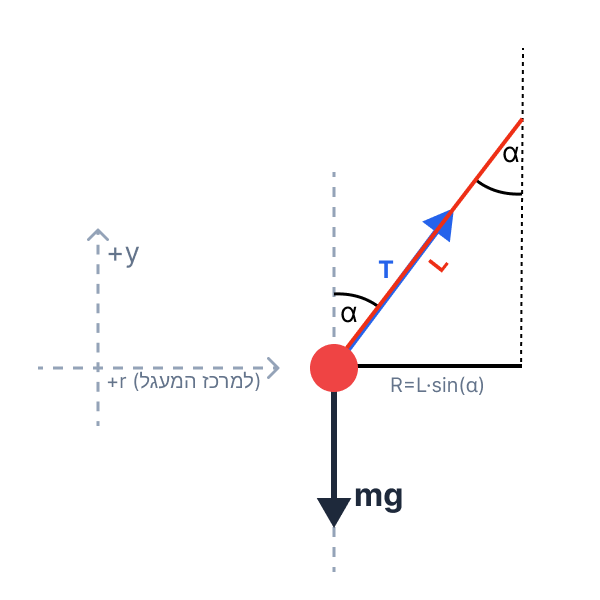

סעיף א' - תרשים כוחות ופיתוח פונקציה
כדור קטן בעל מסה \( m \), קשור לחוט שאורכו \( L \). הכדור מסתובב בתנועה מעגלית אופקית (רדיוס המסלול הוא \( r \)). תדירות הסיבוב היא \( f \), והזווית שיוצר החוט עם האנך היא \( \alpha \). תאוצת הכובד היא \( g=10 \text{ m/s}^2 \).
לשרטט תרשים של הכוחות הפועלים על הכדור, ולפתח ביטוי מתמטי המתאר את הקשר בין הקוסינוס של הזווית \( \cos\alpha \) לבין הביטוי \( \frac{1}{f^2} \).
אנו נשתמש בחוק השני של ניוטון: \(\Sigma\vec{F}=m\vec{a}\). כיוון שיש תנועה מעגלית קצובה, התאוצה הרדיאלית ניתנת על ידי: \(a_R = \omega^2 r\). הקשר בין המהירות הזוויתית לתדירות הוא: \(\omega = 2\pi f\).
ד. הצבה ופתרון:
ראשית, נשרטט תרשים גוף חופשי (FBD). נגדיר את מערכת הצירים: ציר ה-\( y \) (האנכי) מוגדר כחיובי כלפי מעלה. ציר ה-\( x \) (האופקי, הרדיאלי) מוגדר כחיובי לכיוון מרכז המעגל.

על הכדור פועלים שני כוחות: כוח הכובד מטה (מגמתו שלילית בציר שלנו) וכוח המתיחות \( T \) שפועל לאורך החוט, בזווית \( \alpha \) ביחס לציר האנכי. נפרק את כוח המתיחות לרכיבים ונרשום את משוואות הכוחות לכל ציר בנפרד:
בציר ה-\( y \) (האנכי): אין תנועה ולכן אין תאוצה (\( a_y = 0 \)). סכום הכוחות שווה לאפס.
בציר ה-\( x \) (האופקי הרדיאלי): הכדור מבצע תנועה מעגלית, לכן סכום הכוחות שווה למסה כפול התאוצה הרדיאלית.
מהגיאומטריה של המערכת (משולש ישר זווית שהחוט הוא היתר שלו), רדיוס המעגל \( r \) קשור לאורך החוט על ידי: \( r = L \sin\alpha \). בנוסף, נציב את הקשר של המהירות הזוויתית לתדירות \( \omega = 2\pi f \):
נצמצם ב-\( \sin\alpha \) (מותר לנו כי \( \alpha \neq 0 \) כאשר יש תנועה מעגלית), ונקבל את הביטוי למתיחות:
כעת, נחזור למשוואת ציר ה-\( y \) (\( T \cos\alpha = mg \)) ונציב בה את הביטוי שמצאנו ל-\( T \):
נחלק את שני האגפים במסה \( m \), ונעביר אגפים כדי לבודד את הפונקציה המבוקשת:
\( \cos\alpha = \left( \frac{g}{4\pi^2 L} \right) \cdot \frac{1}{f^2} \)
סעיף ב' - השלמת הטבלה וסרטוט גרף
טבלת נתונים עם ערכי התדירות \( f \) (ביחידות של Hz) וערכי הזווית \( \alpha \) (במעלות).
לחשב ולהשלים את שתי השורות התחתונות בטבלה עבור הערכים \( \frac{1}{f^2} \) ו- \( \cos\alpha \) (מעוגל ל-2 ספרות אחרי הנקודה), ולאחר מכן לסרטט גרף המציג את \( \cos\alpha \) כפונקציה של \( \frac{1}{f^2} \).
חישוב אלגברי וטריגונומטרי פשוט במחשבון. חובה לוודא שהמחשבון מכוון למעלות (Degrees)!
ד. הצבה ופתרון:
נדגים את החישוב עבור המדידה הראשונה (עמודה 1 מימין):
נבצע פעולה דומה עבור שאר העמודות ונמלא את הטבלה:
| מדידה | 1 | 2 | 3 | 4 | 5 | 6 |
|---|---|---|---|---|---|---|
| \( f \text{ (Hz)} \) | 0.42 | 0.45 | 0.5 | 0.6 | 0.7 | 1 |
| \( \alpha^\circ \) | 18 | 32 | 45 | 63 | 70 | 80 |
| \( \frac{1}{f^2} \text{ (s}^2\text{)} \) | 5.67 | 4.94 | 4.00 | 2.78 | 2.04 | 1.00 |
| \( \cos\alpha \) | 0.95 | 0.85 | 0.71 | 0.45 | 0.34 | 0.17 |
כעת נסרטט את הגרף. ציר ה-\( x \) יהיה \( \frac{1}{f^2} \) וציר ה-\( y \) יהיה \( \cos\alpha \). אנו מצפים לקבל קו ישר העובר קרוב לראשית הצירים, כיוון שהפונקציה שפיתחנו בסעיף א' היא מהצורה \( y = m \cdot x \).
סעיף ג' - חישוב אורך החוט בעזרת הגרף
המשוואה שפיתחנו בסעיף א': \( \cos\alpha = \left( \frac{g}{4\pi^2 L} \right) \cdot \frac{1}{f^2} \), והגרף המסורטט מסעיף ב'. תאוצת הכובד נלקחת כ- \( g = 10 \text{ m/s}^2 \).
את אורך החוט \( L \) (במטרים) מתוך שיפוע הגרף.
נוסחת שיפוע של קו ישר: \(m = \frac{\Delta y}{\Delta x}\). בנוסף, השוואת השיפוע התיאורטי מהנוסחה לשיפוע הגרפי.
ד. הצבה ופתרון:
תחילה נחשב את שיפוע הקו שיצרנו בגרף (Trendline). נבחר שתי נקודות הנמצאות *בדיוק על קו המגמה* שסרטטנו. נבחר את הראשית \( (0,0) \) ונקודה נוספת שמונחת היטב על הישר, למשל \( (4.94, 0.85) \):
כעת נסתכל על המשוואה התיאורטית מסעיף א'. היא מתאימה למבנה של משוואת ישר \( y = A \cdot x \), כאשר:
- ציר \( y \) הוא \( \cos\alpha \)
- ציר \( x \) הוא \( \frac{1}{f^2} \)
- השיפוע (A) הוא המקדם: \( \frac{g}{4\pi^2 L} \)
נשווה את השיפוע התיאורטי לשיפוע שחישבנו מהגרף, ונחלץ את אורך החוט \( L \):
נציב את \( g = 10 \) ונזכור כי לעיתים בבגרות משתמשים בקירוב \( \pi^2 \approx 10 \), אך לשם דיוק מרבי נציב במחשבון את הערך המלא של פאי:
סעיף ד' - התדירות המינימלית לתנועה מעגלית
אנו מבינים מהגרף ומהמשוואה שככל שהתדירות קטנה (כלומר \( \frac{1}{f^2} \) גדל), הזווית \( \alpha \) קטנה ו- \( \cos\alpha \) מתקרב ל-1.
למצוא על פי הגרף מהי התדירות המינימלית שבה הכדור יוכל לנוע בתנועה מעגלית (כלומר שהחוט עדיין יסטה ממצבו האנכי).
תנאי גבול לתנועה מעגלית של מטוטלת קונית: הזווית חייבת להיות גדולה מאפס. כלומר: \(\alpha > 0^\circ \Rightarrow \cos\alpha < 1\).
ד. הצבה ופתרון:
על פי הגרף, ערך ה-\( y \) (שהוא \( \cos\alpha \)) המקסימלי האפשרי מבחינה פיזיקלית הוא 1 (מצב בו החוט אנכי לחלוטין). מצב זה קורה בתדירות המינימלית ביותר, נסמן אותה ב-\( f_{min} \).
נציב במשוואת השיפוע שלנו את ערך הגבול \( \cos\alpha = 1 \):
אפשר גם להציב ישירות מהמשוואה שפיתחנו בסעיף א':